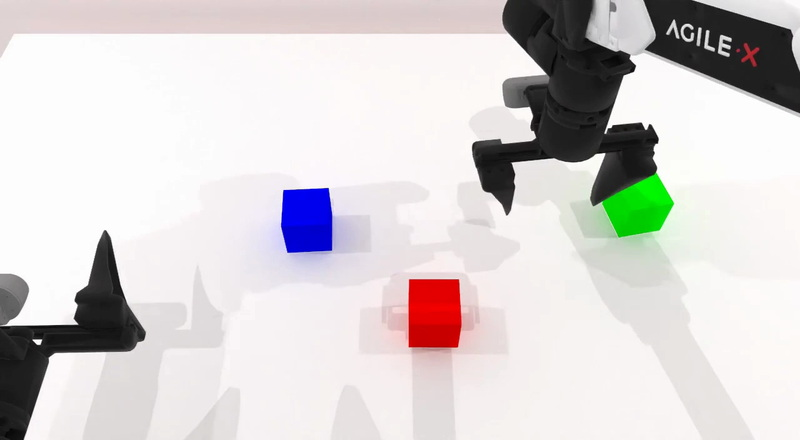
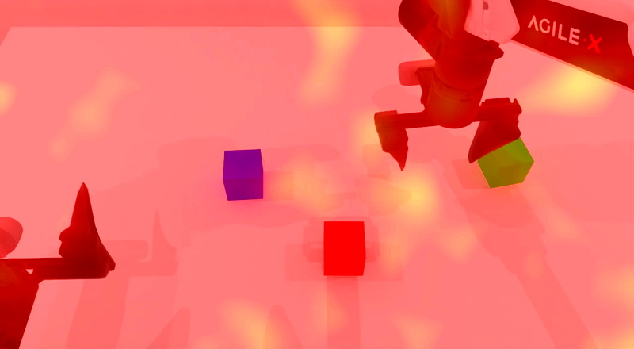
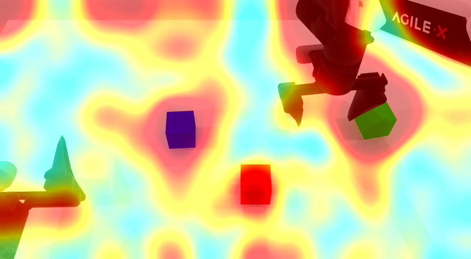
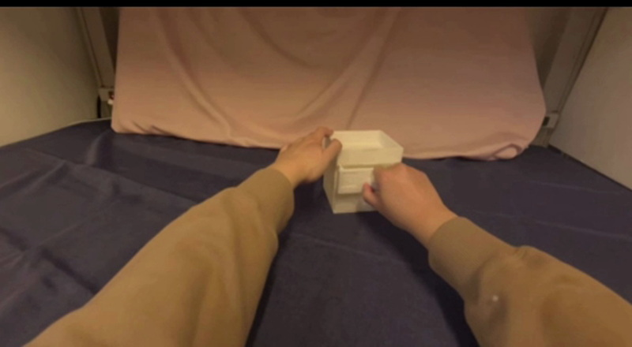
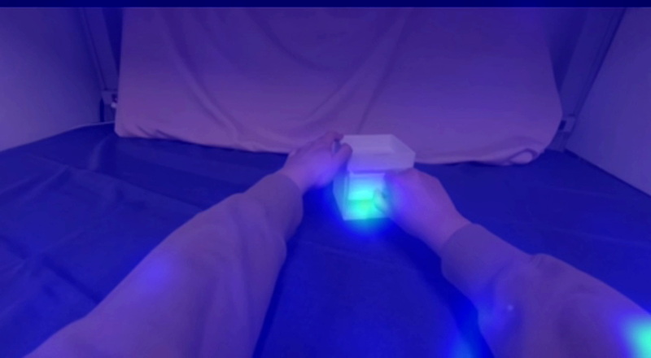
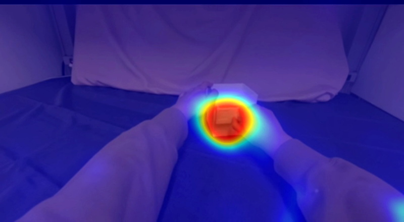

01 — PROBLEM
Uniform supervision spends gradient on what is abundant.
Standard MSE spreads its signal across the frame. IMPACT reallocates supervision toward sparse object motion and contact.
Ground TruthStandard MSEIMPACT
Robot armStacking blocks



Human handWhite box


